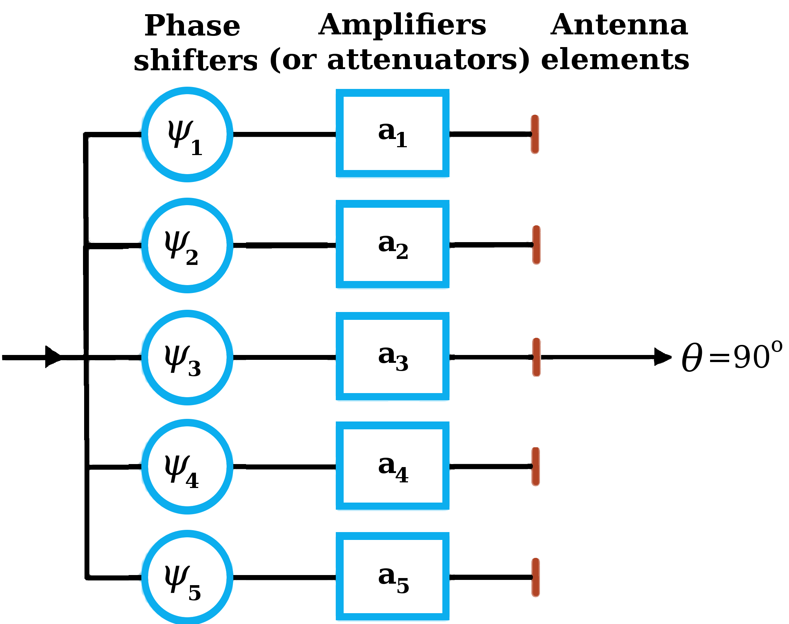

Code 3.2
Array Factor for Uniformly Spaced Array with Linear Phase Distribution
This module computes the array factor as defined by Eq. (3.97) for an
N-element uniformly spaced array whose elements are radiating with
phases that are linearly related to each other.
The user specifies the change in phase between the elements, in
degrees, as well as each of the amplitudes.
The physical spacing of the elements is specified by the user in wavelengths.

Element 1 Amplitude:
Element 2 Amplitude:
Element 3 Amplitude:
Element 4 Amplitude:
Element 5 Amplitude:
Incremental Phase Delay (deg):
Element Spacing, wavelengths:
Array Factor
Normalized Array Factor (dB)
↑
Angle, degrees
↑
Broadside backward
Broadside forward
Note: Once selected, the right and left arrow-keys can be used to move
the sliders.